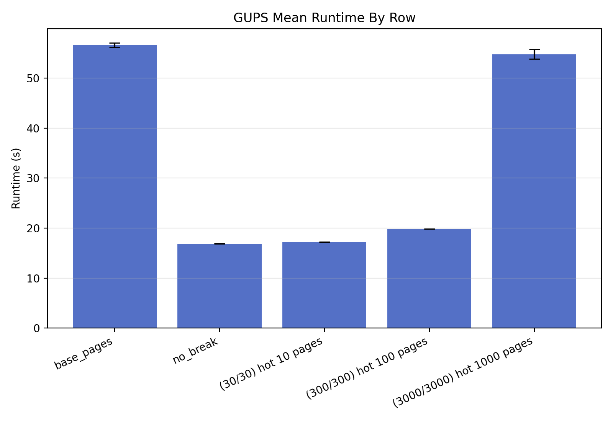
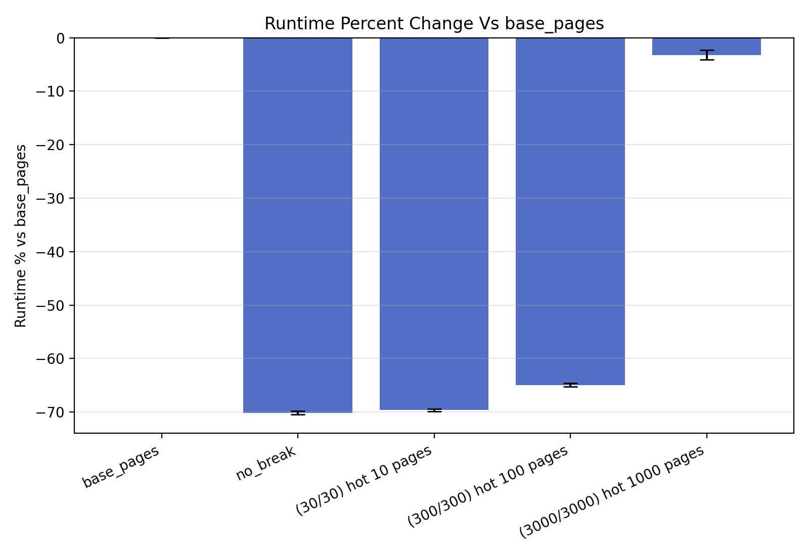
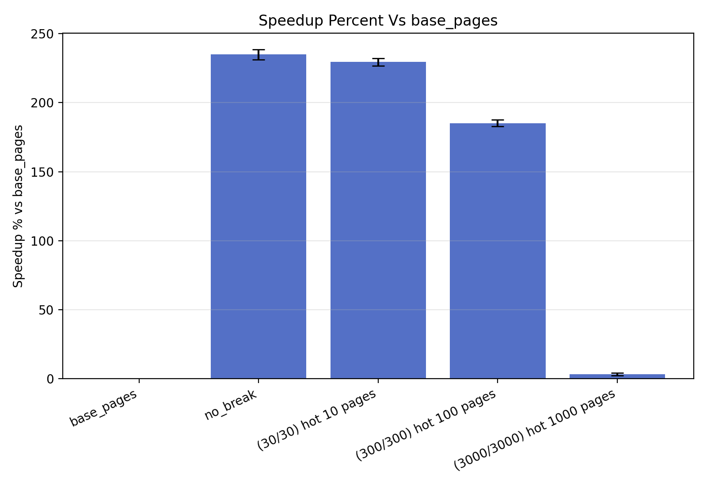
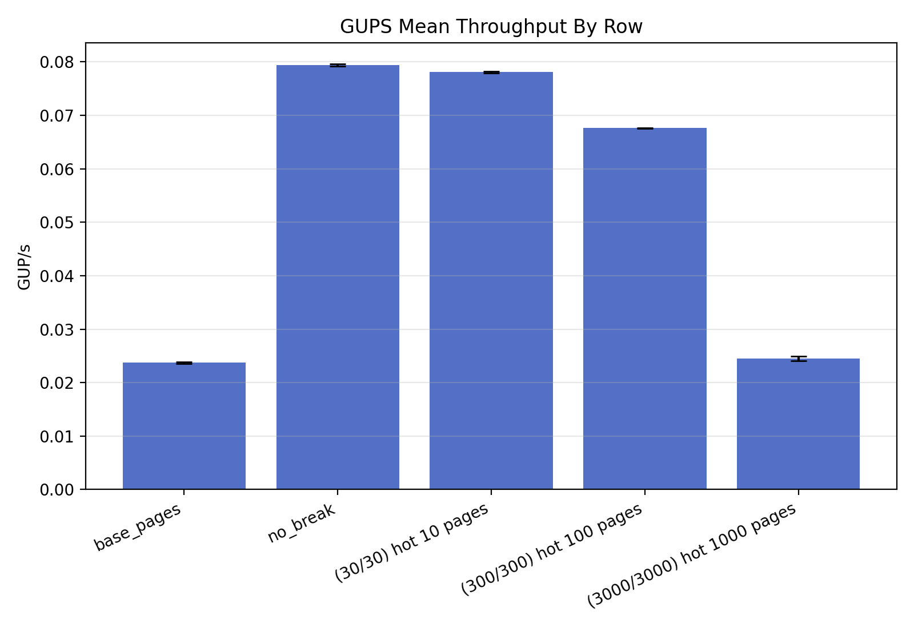
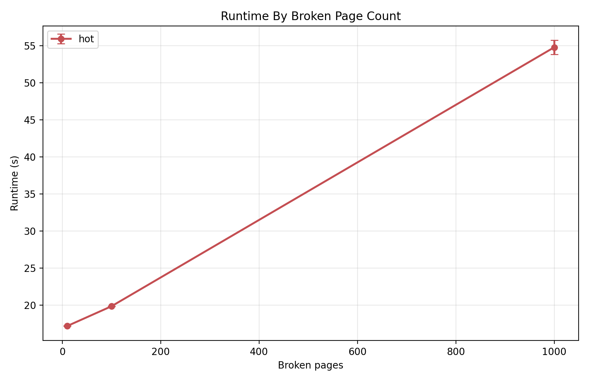
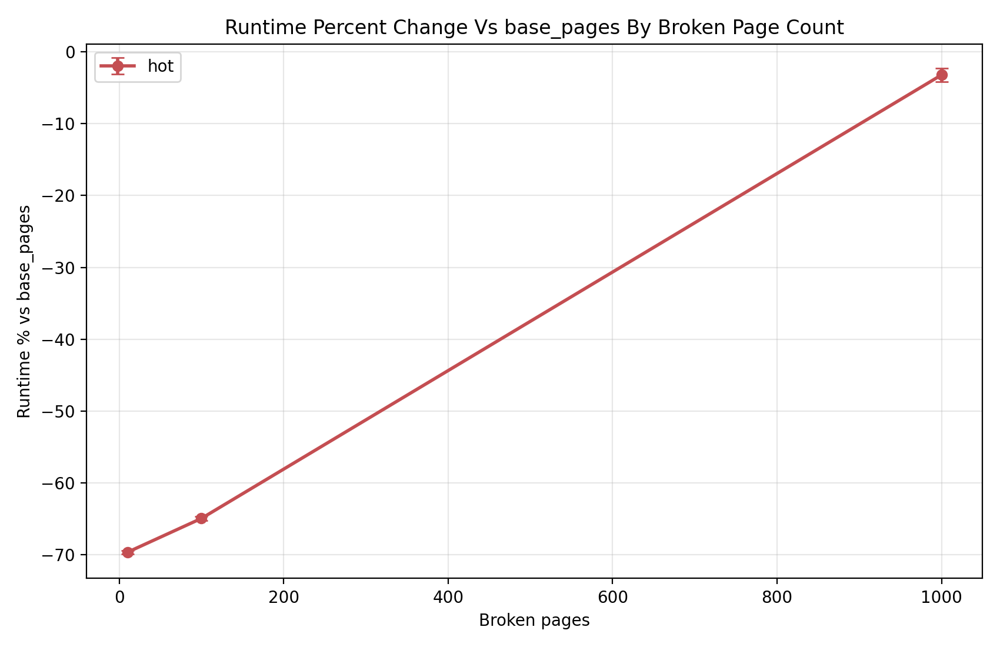
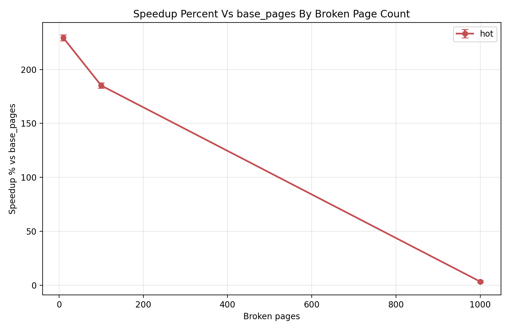
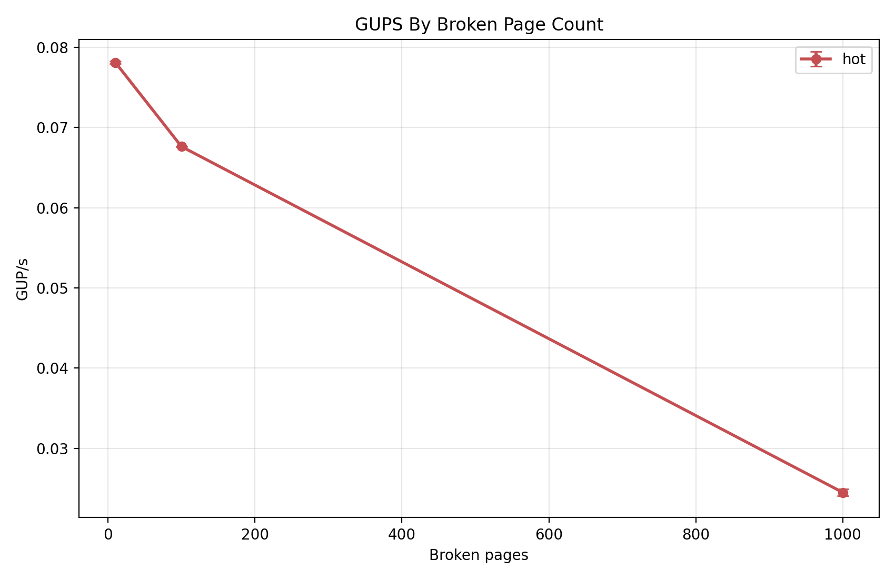

base_pages means THP never with no page breaks.no_break means THP always with no page breaks.base_pages.100 * ((runtime_s_i / base_pages_runtime_s_i) - 1)100 * ((base_pages_runtime_s_i / runtime_s_i) - 1)







| Row | Runtime | Runtime % vs base_pages | Speedup % vs base_pages | GUP/s | dTLB loads | dTLB misses | Split successes | Expected successes | Max split attempts |
|---|---|---|---|---|---|---|---|---|---|
| base_pages | 56.605811 +/- 0.458547 | 0.000 +/- 0.000 | 0.000 +/- 0.000 | 0.023712 +/- 0.000193 | 0 | 0 | 0 | ||
| no_break | 16.904142 +/- 0.048343 | -70.135 +/- 0.327 | 234.870 +/- 3.658 | 0.079400 +/- 0.000227 | 0 | 0 | 0 | ||
| (30/30) hot 10 pages | 17.183944 +/- 0.038307 | -69.641 +/- 0.261 | 229.412 +/- 2.820 | 0.078107 +/- 0.000174 | 30 | 30 | 1 | ||
| (300/300) hot 100 pages | 19.849346 +/- 0.014339 | -64.932 +/- 0.302 | 185.178 +/- 2.448 | 0.067618 +/- 0.000049 | 300 | 300 | 1 | ||
| (3000/3000) hot 1000 pages | 54.787442 +/- 0.959688 | -3.217 +/- 0.926 | 3.330 +/- 0.987 | 0.024503 +/- 0.000430 | 3000 | 3000 | 1 |